I make images and short films that pay attention to people — the small, unposed moments that a bigger production usually rushes past.
I'm a photographer and filmmaker. I have experience across event, portrait, landscape, and street photography, alongside writing and directing short films. One of my most recent projects, a thriller short film, was written, shot, acted, and edited entirely on my own. I'm currently looking for event photography/videography opportunities, school or club media work, and other projects where a fast, self-sufficient eye behind the camera is useful.
Event, portrait, landscape and street work.
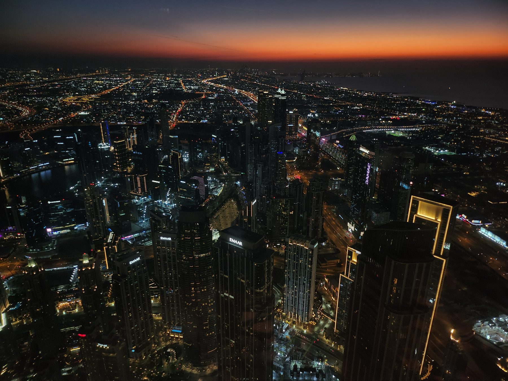
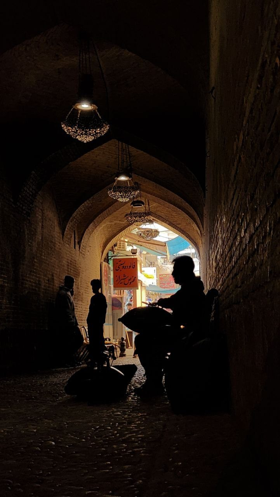
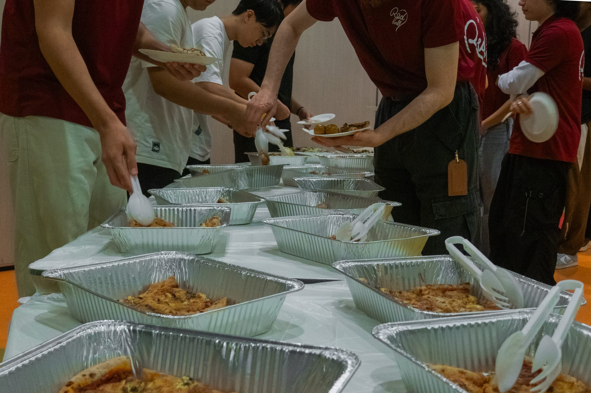
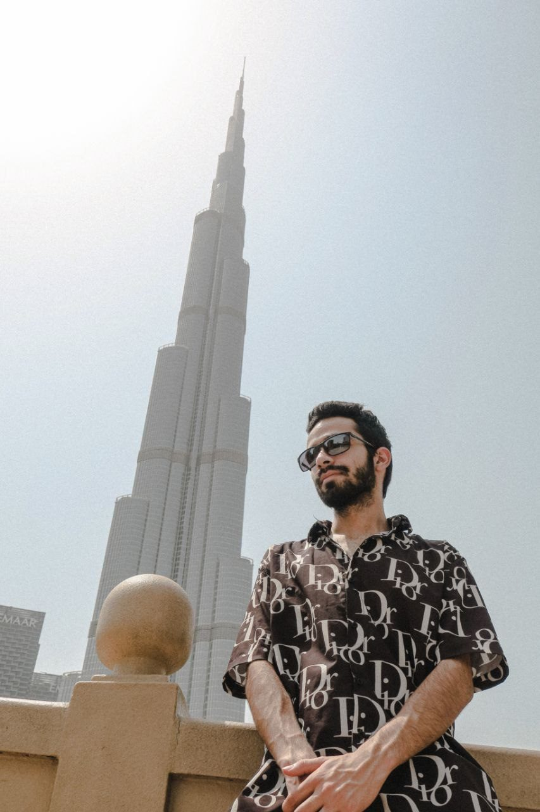
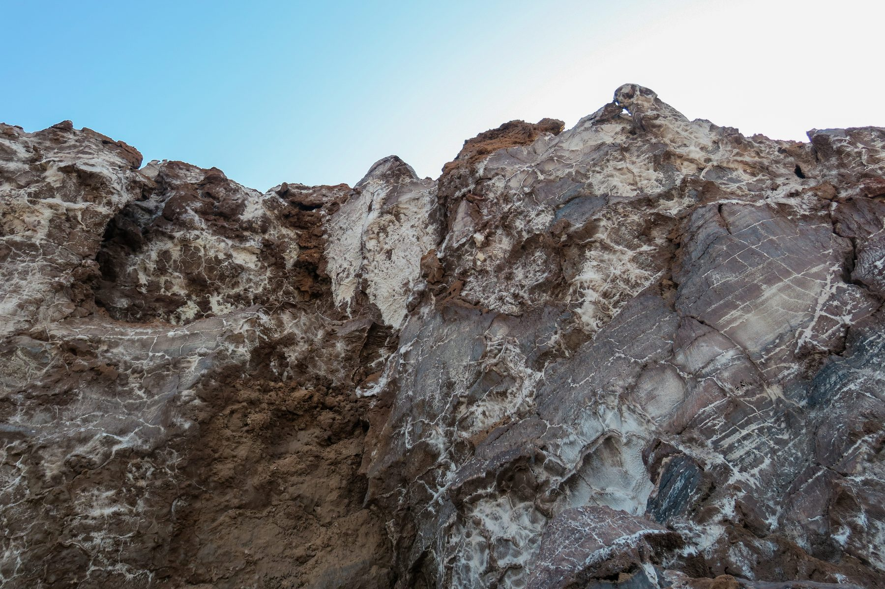
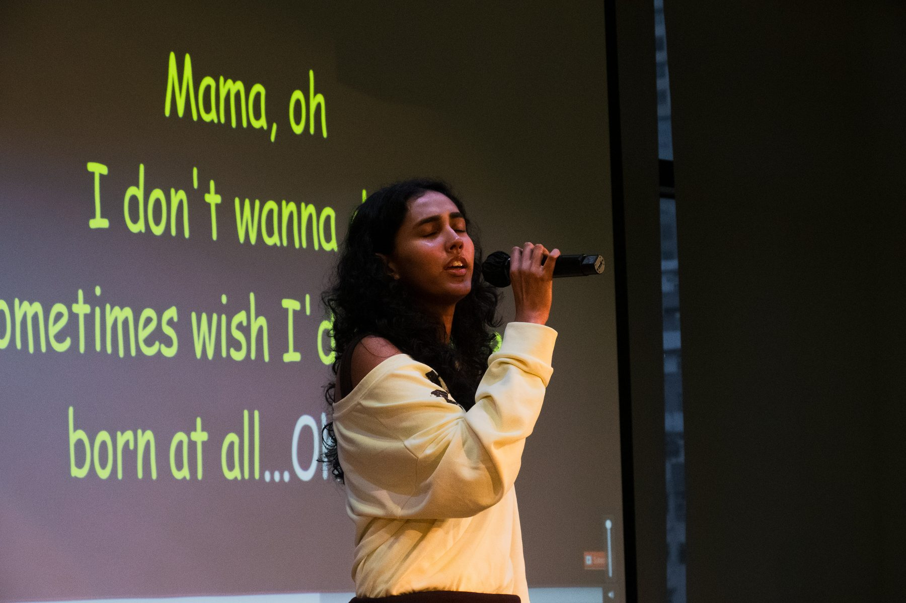
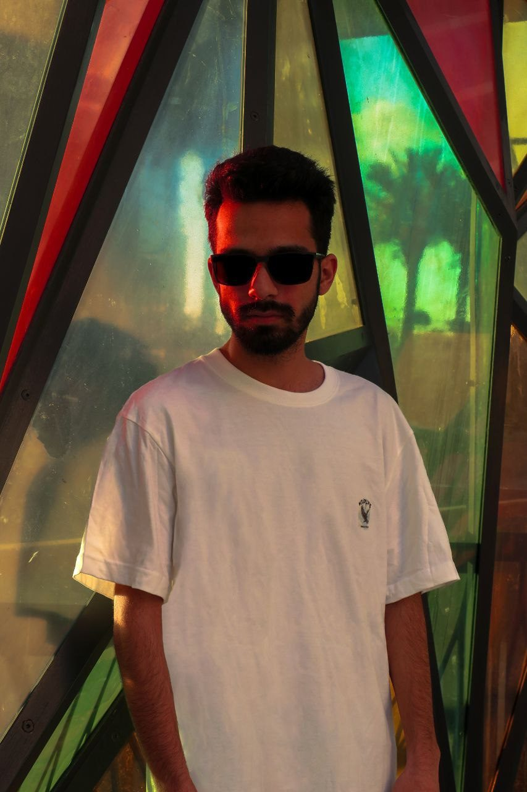
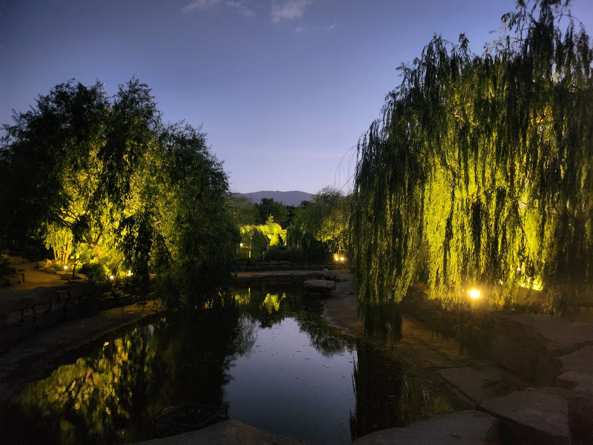
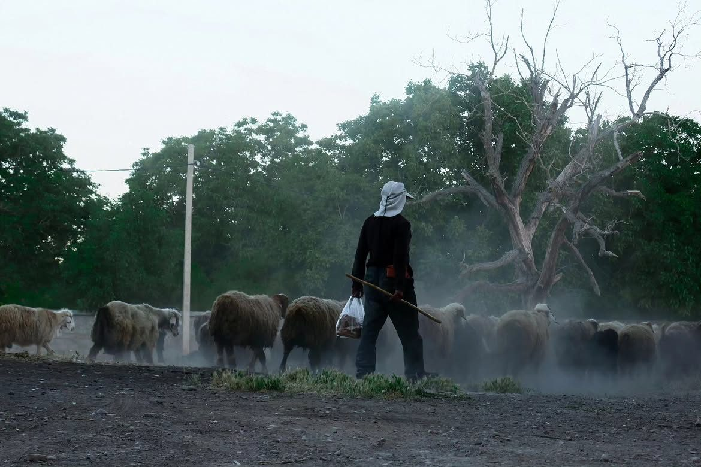
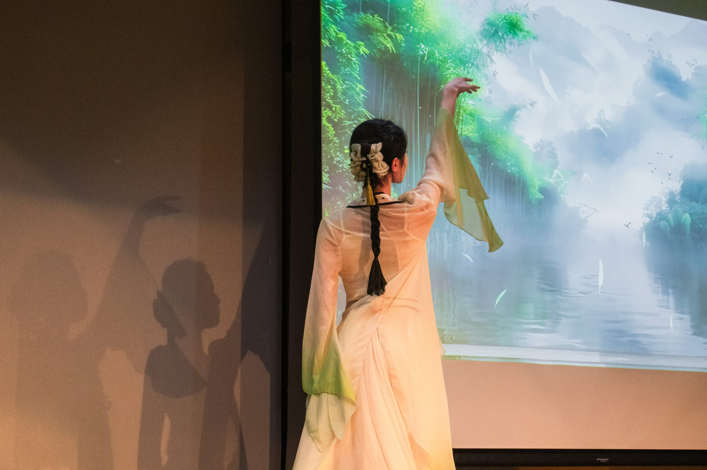
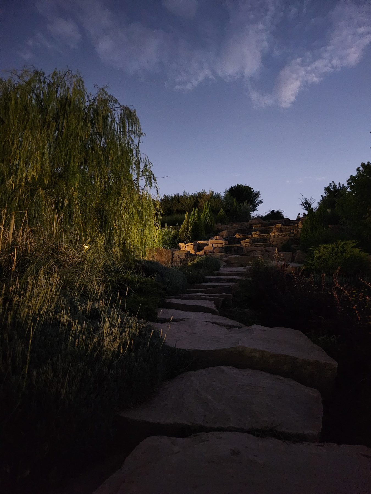
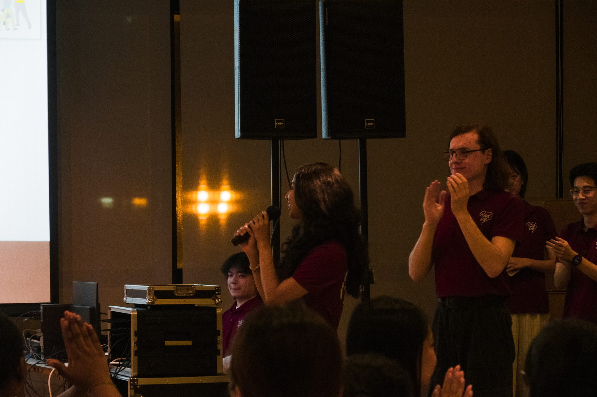
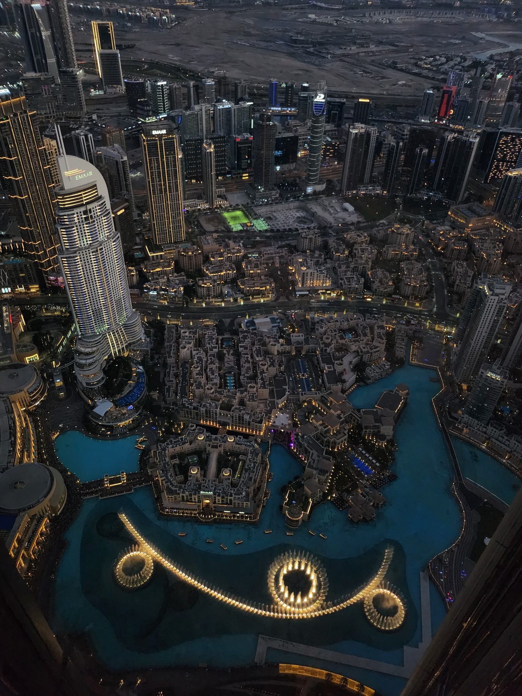
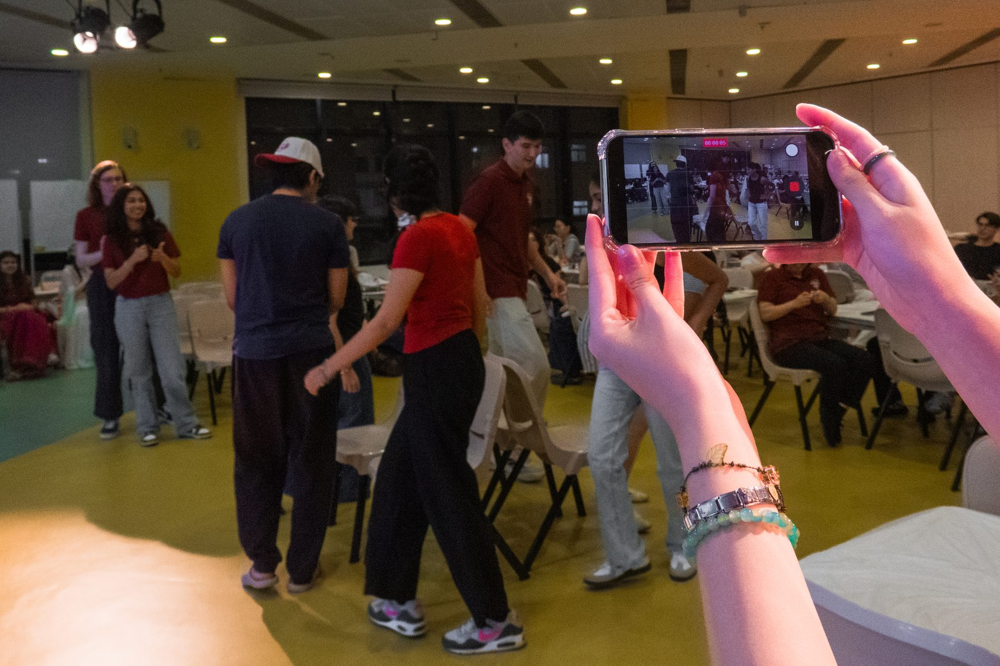
Written, shot, and edited independently.
A thriller short film written, shot, acted, and edited entirely solo — every part of the production, start to finish, was mine.